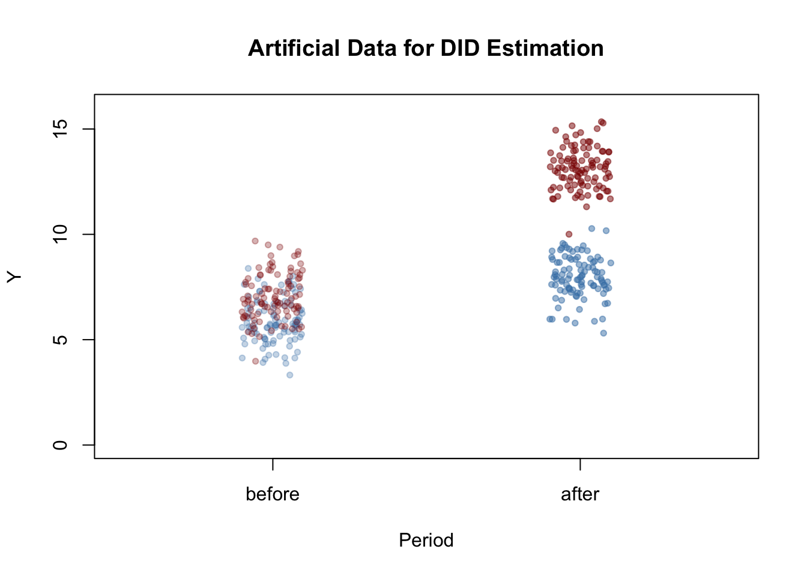

13.4 Quasi Experiments
In quasi-experiments, “as if” randomness is exploited to use methods similar to those that have been discussed in the previous chapter. There are two types of quasi-experiments:11
Random variations in individual circumstances allow to view the treatment “as if” it was randomly determined.
The treatment is only partially determined by “as if” random variation.
The former allows to estimate the effect using either model (13.2), i.e. the difference estimator with additional regressors, or, if there is doubt that the “as if” randomness does not entirely ensure that there are no systematic differences between control and treatment group, using the differences-in-differences (DID) estimator. In the latter case, an IV approach for estimation of a model like (13.2) which uses the source of “as if” randomness in treatment assignment as the instrument may be applied.
Some more advanced techniques that are helpful in settings where the treatment assignment is (partially) determined by a threshold in a so-called running variable are sharp regression discontinuity design (RDD) and fuzzy regression discontinuity design (FRDD).
We will briefly review these techniques and, since the book does not provide any empirical examples in this section, we will use our own simulated data in a minimal example to discuss how DID, RDD and FRDD can be applied in R.
The Differences-in-Differences Estimator
In quasi-experiments it is often the case that the source of “as if” randomness in treatment assignment cannot entirely prevent systematic differences between control and treatment group. This problem was encountered by Card & Krüger (1994) who use geography as the “as if” random treatment assignment to study the effect on employment of workers in the fast-food restaurants caused by an increase in the state minimum wage in New Jersey in the year of 1992. Their idea was to use the fact that the increase in minimum wage applied to employees in New Jersey (treatment group) but not to those living in the neighboring Pennsylvania (control group).
It is quite conceivable that such a wage hike is not correlated with other determinants of employment. However, there still might be some state-specific differences and thus differences between control and treatment group. This would render the differences estimator biased and inconsistent. Card & Krüger (1994) solved this by using a DID estimator: they collected data in February 1992 (before the treatment) and November 1992 (after the treatment) for the same restaurants and estimated the effect of the wage hike by analyzing differences in the differences in employment for New Jersey and Pennsylvania before and after the increase.12 The DID estimator is
\[\begin{align} \widehat{\beta}_1^{\text{diffs-in-diffs}} =& \, (\overline{Y}^{\text{treatment,after}} - \overline{Y}^{\text{treatment,before}}) - (\overline{Y}^{\text{control,after}} - \overline{Y}^{\text{control,before}}) \\ =& \Delta \overline{Y}^{\text{treatment}} - \Delta \overline{Y}^{\text{control}} \tag{13.8} \end{align}\]with
\(\overline{Y}^{\text{treatment,before}}\) - the sample average in the treatment group before the treatment
\(\overline{Y}^{\text{treatment,after}}\) - the sample average in the treatment group after the treatment
\(\overline{Y}^{\text{treatment,before}}\) - the sample average in the control group before the treatment
\(\overline{Y}^{\text{treatment,after}}\) - the sample average in the control group after the treatment.
We now use R to reproduce Figure 13.1 of the book.
# initialize plot and add control group
plot(c(0, 1), c(6, 8),
type = "p",
ylim = c(5, 12),
xlim = c(-0.3, 1.3),
main = "The Differences-in-Differences Estimator",
xlab = "Period",
ylab = "Y",
col = "steelblue",
pch = 20,
xaxt = "n",
yaxt = "n"
)
axis(1, at = c(0, 1), labels = c("before", "after"))
axis(2, at = c(0, 13))
# add treatment group
points(c(0, 1, 1), c(7, 9, 11),
col = "darkred",
pch = 20
)
# add line segments
lines(c(0, 1), c(7, 11), col = "darkred")
lines(c(0, 1), c(6, 8), col = "steelblue")
lines(c(0, 1), c(7, 9), col = "darkred", lty = 2)
lines(c(1, 1), c(9, 11), col = "black", lty = 2, lwd = 2)
# add annotations
text(1, 10, expression(hat(beta)[1]^{DID}), cex = 0.8, pos = 4)
text(0, 5.5, "s. mean control", cex = 0.8 , pos = 4)
text(0, 6.8, "s. mean treatment", cex = 0.8 , pos = 4)
text(1, 7.9, "s. mean control", cex = 0.8 , pos = 4)
text(1, 11.1, "s. mean treatment", cex = 0.8 , pos = 4)
where \(\Delta Y_i\) denotes the difference in pre- and post-treatment outcomes of individual \(i\) and \(X_i\) is the treatment indicator.
Adding additional regressors that measure pre-treatment characteristics to (13.9) we obtain \[\begin{align} \Delta Y_i = \beta_0 + \beta_1 X_i + \beta_2 W_{1i} + \dots + \beta_{1+r} W_{ri} + u_i, \tag{13.10} \end{align}\]the difference-in-differences estimator with additional regressors. The additional regressors may lead to a more precise estimate of \(\beta_1\).
We will keep things simple and focus on estimation of the treatment effect using DID in the simplest case, that is a control and a treatment group observed for two time periods — one before and one after the treatment. In particular, we will see that there are three different ways to proceed. First, we simulate pre- and post-treatment data using R.
# sample size
n <- 200
# treatment effect
TEffect <- 4
# treatment dummy
TDummy <- c(rep(0, n/2), rep(1, n/2))
# simulate pre- and post-treatment values of the dep. variable
y_pre <- 7 + rnorm(n)
y_pre[1:n/2] <- y_pre[1:n/2] - 1
y_post <- 7 + 2 + TEffect * TDummy + rnorm(n)
y_post[1:n/2] <- y_post[1:n/2] - 1 We continue by plotting the data. The function jitter() is used to add some artificial dispersion in the horizontal component of the points so that there is less overplotting. The function alpha() from the package scales allows to adjust the opacity of colors used in plots.
library(scales)
pre <- rep(0, length(y_pre[TDummy==0]))
post <- rep(1, length(y_pre[TDummy==0]))
# plot control group in t=1
plot(jitter(pre, 0.6),
y_pre[TDummy==0],
ylim = c(0, 16),
col = alpha("steelblue", 0.3),
pch = 20,
xlim = c(-0.5, 1.5),
ylab = "Y",
xlab = "Period",
xaxt = "n",
main = "Artificial Data for DID Estimation"
)
axis(1, at = c(0, 1), labels = c("before", "after"))
# add treatment group in t=1
points(jitter(pre, 0.6),
y_pre[TDummy==1],
col = alpha("darkred", 0.3),
pch = 20
)
# add control group in t=2
points(jitter(post, 0.6),
y_post[TDummy==0],
col = alpha("steelblue", 0.5),
pch = 20
)
# add treatment group in t=2
points(jitter(post, 0.6),
y_post[TDummy==1],
col = alpha("darkred", 0.5),
pch = 20
)
Notice that both observations from control and treatment group have a higher sample mean after the treatment but that the increase is stronger for the treatment group. Using DID we may estimate how much of that difference in the difference between groups is due to the treatment.
It is straightforward to compute the DID estimate in the fashion of (13.8).
# compute the DID estimator for the treatment effect 'by hand'
mean(y_post[TDummy==1]) - mean(y_pre[TDummy==1]) -
(mean(y_post[TDummy==0]) - mean(y_pre[TDummy==0]))## [1] 3.960268Notice that the estimate is close to \(4\), the value chosen as the treatment effect TEffect above. Since (13.9) is a simple linear model, we may perform OLS estimation of this regression specification using lm().
# compute the DiD estimator using a linear model
lm(I(y_post - y_pre) ~ TDummy)##
## Call:
## lm(formula = I(y_post - y_pre) ~ TDummy)
##
## Coefficients:
## (Intercept) TDummy
## 2.104 3.960where \(D_i\) is the binary treatment indicator, \(Period_i\) is a binary indicator for the after-treatment period and the \(Period_i \times D_i\) is the interaction of both.
As for (13.9), estimation of (13.11) using R is straightforward. See Chapter 8 for a discussion of interaction terms in regression models.
# prepare Data for DID regression using interaction term
d <- data.frame("Y" = c(y_pre,y_post),
"Treatment" = TDummy,
"Period" = c(rep("1", n), rep("2", n))
)
# estimate the model
lm(Y ~ Treatment * Period, data = d)##
## Call:
## lm(formula = Y ~ Treatment * Period, data = d)
##
## Coefficients:
## (Intercept) Treatment Period2
## 5.858 1.197 2.104
## Treatment:Period2
## 3.960As expected, the estimate of the coefficient on the interaction of the treatment dummy and the time dummy coincide with the estimates obtained using the approach (13.8) and OLS estimation of (13.9).
Regression Discontinuity Estimators
Consider the model
\[\begin{align} Y_i =& \beta_0 + \beta_1 X_i + \beta_2 W_i + u_i \tag{13.12} \end{align}\] and let \[\begin{align*} X_i =& \begin{cases} 1, & W_i \geq c \\ 0, & W_i < c \end{cases} \end{align*}\]so that the receipt of treatment, \(X_i\), is determined by some threshold \(c\) of a continuous variable \(W_i\), the so called running variable. The idea of regression discontinuity design is to use observations with a \(W_i\) close to \(c\) for estimation of \(\beta_1\). \(\beta_1\) is the average treatment effect for individuals with \(W_i = c\) which is assumed to be a good approximation to the treatment effect in the population. (13.12) is called a sharp regression discontinuity design because treatment assignment is deterministic and discontinuous at the cutoff: all observations with \(W_i < c\) do not receive treatment and all observations where \(W_i \geq c\) are treated.
The subsequent code chunks show how to estimate a linear SRDD using R and how to produce plots in the way of Figure 13.2 of the book.
# generate sample data
W <- runif(1000, -1, 1)
y <- 3 + 2 * W + 10 * (W>=0) + rnorm(1000)# load the package 'rddtools'
library(rddtools)
# construct rdd_data
data <- rdd_data(y, W, cutpoint = 0)
# plot the sample data
plot(data,
col = "steelblue",
cex = 0.35,
xlab = "W",
ylab = "Y"
)
The argument nbins sets the number of bins the running variable is divided in for aggregation. The dots represent bin averages of the outcome variable.
We may use the function rdd_reg_lm() to estimate the treatment effect using model (13.12) for the artificial data generated above. By choosing slope = “same” we restrict the slopes of the estimated regression function to be the same on both sides of the jump at the cutpoint \(W=0\).
# estimate the sharp RDD model
rdd_mod <- rdd_reg_lm(rdd_object = data,
slope = "same")
summary(rdd_mod)##
## Call:
## lm(formula = y ~ ., data = dat_step1, weights = weights)
##
## Residuals:
## Min 1Q Median 3Q Max
## -3.2361 -0.6779 -0.0039 0.7113 3.0096
##
## Coefficients:
## Estimate Std. Error t value Pr(>|t|)
## (Intercept) 2.93889 0.07082 41.50 <2e-16 ***
## D 10.12692 0.12631 80.18 <2e-16 ***
## x 1.88249 0.11074 17.00 <2e-16 ***
## ---
## Signif. codes: 0 '***' 0.001 '**' 0.01 '*' 0.05 '.' 0.1 ' ' 1
##
## Residual standard error: 1.019 on 997 degrees of freedom
## Multiple R-squared: 0.972, Adjusted R-squared: 0.972
## F-statistic: 1.732e+04 on 2 and 997 DF, p-value: < 2.2e-16The coefficient estimate of interest is labeled D. Note that the estimate is very close to the treatment effect chosen in the DGP above.
It is easy to visualize the result: simply call plot() on the estimated model object.
plot(rdd_mod,
cex = 0.35,
col = "steelblue",
xlab = "W",
ylab = "Y")
Note that, as above, the dots represent averages of binned observations.
So far we have assumed that crossing of the threshold determines receipt of treatment so that the jump of the population regression functions at the threshold can be regarded as the causal effect of the treatment.
When crossing of the threshold \(c\) is not the only cause for receipt of the treatment and instead other, treatment is not a deterministic function of \(W_i\). Instead, it is useful to think of the \(c\) as a threshold where the probability of receiving the treatment jumps.
This jump may be due to unobservable variables that have impact on the probability of being treated. Thus, \(X_i\) in (13.12) will be correlated with the error \(u_i\) and it becomes more difficult to consistently estimate the treatment effect. In this setting, using a fuzzy regression discontinuity design which is based an IV approach may be a remedy: take the binary variable \(Z_i\) as an indicator for crossing of the threshold, \[\begin{align*} Z_i = \begin{cases} 1, & W_i \geq c \\ 0, & W_i < c, \end{cases} \end{align*}\]and assume that \(Z_i\) relates to \(Y_i\) only through the treatment indicator \(X_i\). Then \(Z_i\) and \(u_i\) are uncorrelated but \(Z_i\) influences receipt of treatment so it is correlated with \(X_i\). Thus, \(Z_i\) is a valid instrument for \(X_i\) and (13.12) can be estimated using TSLS.
The following code chunk generates sample data where observations with a value of the running variable \(W_i\) below the cutoff \(c=0\) do not receive treatment and observations with \(W_i \geq 0\) do receive treatment with a probability of \(80\%\) so that treatment status is only partially determined by the running variable and the cutoff. Treatment leads to an increase in \(Y\) by \(2\) units. Observations with \(W_i \geq 0\) that do not receive treatment are called no-shows: think of an individual that was assigned to receive the treatment but somehow manages to avoid it.
library(MASS)
# generate sample data
mu <- c(0, 0)
sigma <- matrix(c(1, 0.7, 0.7, 1), ncol = 2)
set.seed(1234)
d <- as.data.frame(mvrnorm(2000, mu, sigma))
colnames(d) <- c("W", "Y")
# introduce fuzziness
d$treatProb <- ifelse(d$W < 0, 0, 0.8)
fuzz <- sapply(d$treatProb, function(x) rbinom(1, 1, prob = x))
# treatment effect
d$Y <- d$Y + fuzz * 2We plot all observations and use blue color to mark individuals that did not receive the treatment and use red color for those who received the treatment.
# colored plot of tretment and control group
plot(d$W, d$Y,
col = c("steelblue", "darkred")[factor(fuzz)],
pch= 20,
cex = 0.5,
xlim = c(-3, 3),
ylim = c(-3.5, 5),
xlab = "W",
ylab = "Y"
)
# add dashed vertical line at cutoff
abline(v = 0, lty = 2)
Obviously, receipt of treatment is no longer a deterministic function of the running variable \(W\). Some observations with \(W\geq0\) did not receive the treatment. We may estimate a FRDD by additionally setting treatProb as the assignment variable z in rdd_data(). Then rdd_reg_lm() applies the following TSLS procedure: treatment is predicted using \(W_i\) and the cutoff dummy \(Z_i\), the instrumental variable, in the first stage regression. The fitted values from the first stage regression are used to obtain an unbiased estimate of the treatment effect using the second stage where the outcome \(Y\) is regressed on the fitted values and the running variable \(W\).
# Estimate the Fuzzy RDD
data <- rdd_data(d$Y, d$W,
cutpoint = 0,
z = d$treatProb)
frdd_mod <- rdd_reg_lm(rdd_object = data,
slope = "same")
frdd_mod## ### RDD regression: parametric ###
## Polynomial order: 1
## Slopes: same
## Number of obs: 2000 (left: 999, right: 1001)
##
## Coefficient:
## Estimate Std. Error t value Pr(>|t|)
## D 1.981297 0.084696 23.393 < 2.2e-16 ***
## ---
## Signif. codes: 0 '***' 0.001 '**' 0.01 '*' 0.05 '.' 0.1 ' ' 1The estimate is close to \(2\), the population treatment effect. We may call plot() on the model object to obtain a graph consisting of binned data and the estimated regression function.
# plot estimated FRDD function
plot(frdd_mod,
cex = 0.5,
lwd = 0.4,
xlim = c(-4, 4),
ylim = c(-3.5, 5),
xlab = "W",
ylab = "Y"
)
What if we would use a SRDD instead, thereby ignoring the fact that treatment is not perfectly determined by the cutoff in \(W\)? We may get an impression of the consequences by estimating an SRDD using the previously simulated data.
# estimate SRDD
data <- rdd_data(d$Y, d$W,
cutpoint = 0
)
srdd_mod <- rdd_reg_lm(rdd_object = data,
slope = "same")
srdd_mod## ### RDD regression: parametric ###
## Polynomial order: 1
## Slopes: same
## Number of obs: 2000 (left: 999, right: 1001)
##
## Coefficient:
## Estimate Std. Error t value Pr(>|t|)
## D 1.585038 0.067756 23.393 < 2.2e-16 ***
## ---
## Signif. codes: 0 '***' 0.001 '**' 0.01 '*' 0.05 '.' 0.1 ' ' 1The estimate obtained using a SRDD shows a substantial downward bias. In fact this procedure is inconsistent for the true causal effect so enlarging the sample does not alleviate the bias.
Hereinafter the book continues with a discussion of potential problems with quasi-experiments. As for all empirical studies, these potential problems are related to internal and external validity. This part is followed by a technical discussion of treatment effect estimation when the causal effect of treatment is heterogeneous in the population. We encourage you to work on these sections on your own.
Summary
In this chapter we have introduced the concept of causal effect in randomized controlled experiments and quasi-experiments where variations in circumstances or accidents of nature are treated as sources of “as if” random assignment to treatment. We have also discussed methods that allow for unbiased and consistent estimation of these effects in both settings. This included the differences estimator, the differences-in-differences estimator as well as sharp and fuzzy regression discontinuity design estimators. It was shown how to apply these estimation techniques in R.
In an empirical application we have shown how to replicate the results of the analysis of the STAR data presented in Chapter 13.3 of the book using R. This study uses a randomized controlled experiment to assess whether smaller classes improve students’ performance on standardized tests. We have stressed that, being related to a randomized controlled experiment, the data produced by this study are fundamentally different to those used in the cross-section studies Chapters 4 to 8 and therefore we have motivated usage of a differences estimator.
Chapter 12.4 demonstrated how estimates of treatment effects can be obtained when the design of the study is a quasi-experiment that allows for differences-in-differences or regression discontinuity design estimators. In particular, we have introduced core functions of the package rddtools that are convenient for estimation as well as graphical analysis of the research design before and after estimating a regression discontinuity design.
References
Card, D., & Krüger, B. (1994). Minimum wages and employment: A case study of the fast-food industry in new jersey and pennsylvania. The American Economic Review, 84(4), 772–793.